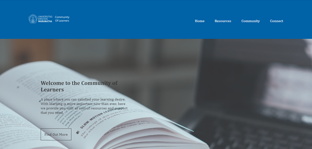
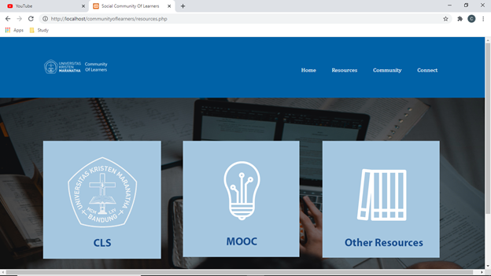
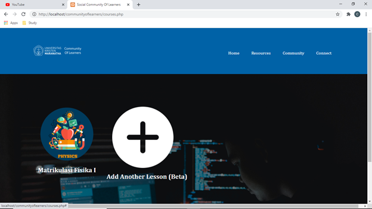

Learning is important, and because of that we need tools that will support and make the learning journey easier.
We believe by having good resources of learning materials and a community to support one studies is the key to
having better learning experience. And that is what we're trying to achieve here.

resources
Pada bagian ini para pelajar diberikan berbagai sumber belajar mulai dari CLS, MOOC, dan other resources
yang telah kami kumpulkan sehingga dapat dengan mudah diakses. Pada kesempatan ini kami merancang sebuah kursus
matrikulasi fisika yang mendukung mata kuliah Fisika Listrik pada prodi Sistem Komputer. Saat ini mata
kuliah tersebut diajar oleh Pak Pin Panji Yapinus S.T, M.T. Kursus matrikulasi fisika ini kami tempatkan
pada bagian MOOC. MOOC sendiri merupakan singkatan dari Massive Open Online Course, program ini sudah
banyak dijalankan oleh berbagai universitas di dunia. Tujuan dari program ini merupakan menyediakan
berbagai kursus/course gratis yang dapat diakses oleh siapa saja. Hal tentu saja dapat mendukung keberadaan
kampus merdeka. Berdasarkan hasil research yang telah kami lakukan universitas-universitas di Eropa telah
menerima sertifikat online course sebagai pengganti SKS mata kuliah yang diajar. Mereka memiliki sebuah
penyetaraan SKS yang disebut ECTS sehingga proses penyetaraan kualifikasi dalam kursus online dengan mata
kuliah yang digantikan dapat menjadi lebih mudah.

Our Philosophy
Learning is important, and because of that we need tools that will support and make the learning journey easier.
We believe by having good resources of learning materials and a community to support one studies is the key to
having better learning experience. And that is what we're trying to achieve here.

Our Philosophy
Learning is important, and because of that we need tools that will support and make the learning journey easier.
We believe by having good resources of learning materials and a community to support one studies is the key to
having better learning experience. And that is what we're trying to achieve here.